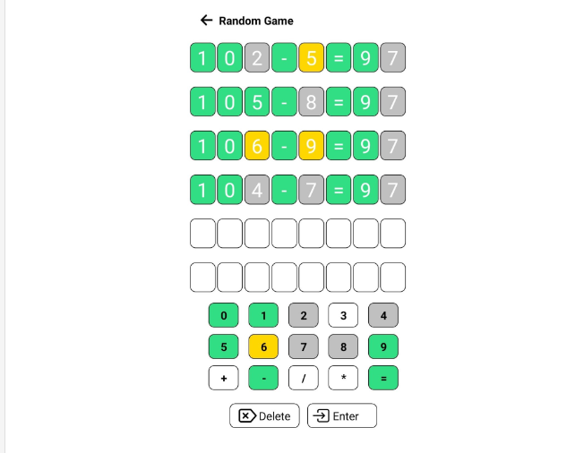

I was inspired by Wordle while creating this project. In this app, I developed an algorithm that generates random mathematical operations, and the user attempts to predict the operation.
Similar to Wordle, the game gives feedback on the player's guesses. If a number or operation sign (such as addition, multiplication, or equals sign) is in the correct position, it is shown in green. If it is part of the operation but in the wrong position, it is shown in yellow. If the number or symbol is not part of the operation at all, it is displayed in gray. The player has six attempts to guess the correct operation.
My main goal was to make it easier for kids to learn math during their spare time in a fun way. For example, my brother loved the game so much that he improved his math skills by playing it on the subway.
Additionally, I presented this project at the TUBITAK STEM exhibition that took place at my school.